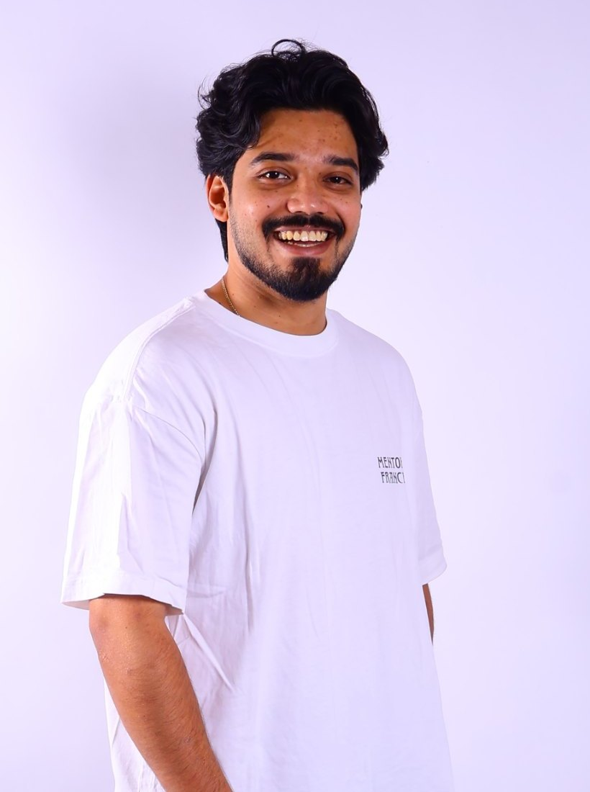

01
Show the plan
Agents reveal what they'll do before they do it, so people can correct course early.
Plan previews · Step listsProduct designer working across UI/UX and agentic AI. I turn complex, autonomous systems into calm interfaces, with clear plans, honest confidence and an undo button.
Available for product design roles
Plan previews, approval checkpoints and one-tap undo keep people in control of an autonomous assistant.
Cutting checkout and support friction for Razorpay and Cleartrip without losing trust.
Interviews, flows, a reusable design system and a hi-fi prototype.
AI suggests, people decide. A calmer tool for operations teams.
Four principles I bring to every agentic product, grounded in Google PAIR, Microsoft HAX and shapeof.ai patterns.
Agents reveal what they'll do before they do it, so people can correct course early.
Plan previews · Step listsConfidence cues, sources and reversible actions. Trust is designed, not assumed.
Confidence · SourcesErrors, uncertainty and handoffs get as much craft as the happy path.
Recovery · HandoffsI prototype in code with AI tools and test with real users, fast.
Prototypes · Testing[Add a short testimonial from a mentor, teammate or client about working with you.][Name][Role, Company]